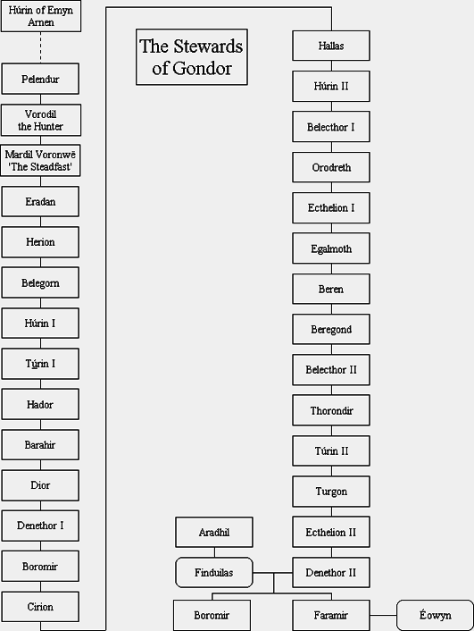

Notlar:
◊ 33. Gondor Kralı Eärnur'un evlenmeden kayboluşunun ardından krallar soyu tükendi ve Gondor'un yönetimi kralın yerine hükmeden Vekilharç Hükümdar'lara geçti ve Kral Minardil'in vekilharcı olan Hûrin'in soyundan gelme [İlk Çağ'daki Húrin ile karıştırmayın] Mardil ilk Vekilharç Hükümdar oldu. Bu böylece devam etti ve II. Ecthelion, 25. Vekilharç olarak tahta çıktı. Dol Amroth Prensi Adrahil'in kızı Finduilas ile evlenen oğlu II. Denethor, Gondor'un 26. ve son Vekilharç Hükümdarı olacaktı.
◊ II. Denethor'un büyük oğlu Boromir, Tek Yüzük'ün büyüsüne kapılarak Frodo'yu öldürmek istedi. Ama daha sonra Merry ve Pippin'i korumak isterken orklar tarafından öldürüldü.
◊ II. Denethor'un küçük oğlu Faramir, ağabeyine pek benzemeyen bir doğaya sahipti ve babasından pek hoşlanmazdı. Yüzük Savaşları'nın öncesinde Ithilien Kolculan'nın Reisiydi. Nazgûl yüzünden hastalandı, nerdeyse babası tarafından yakılacaktı ama Beregond, Gandalf ve Aragorn sayesinde kurtuldu. İyileşme döneminde Rohan kraliyet soyundan gelen Theodwyn'nin kızı Eowyn'e âşık oldu ve sonrasında onunla evlendi. Yüzük Savaşları'nın ardından Gondor Vekilharçlığı, Ithilien Prensi ve Emyn Arnen Efendisi oldu.

SON